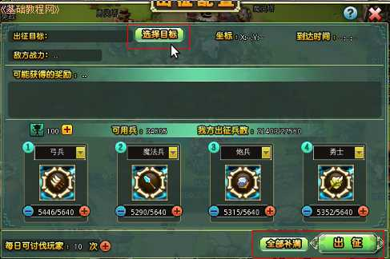
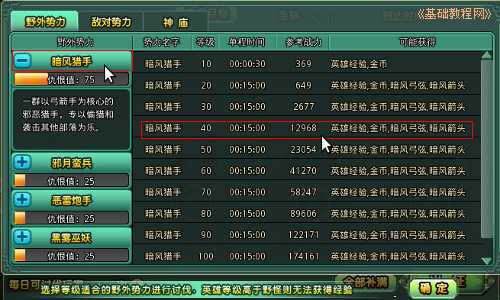
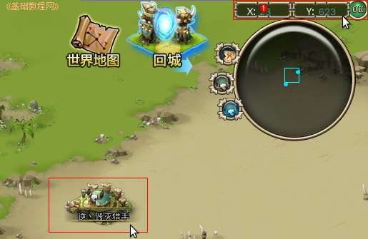
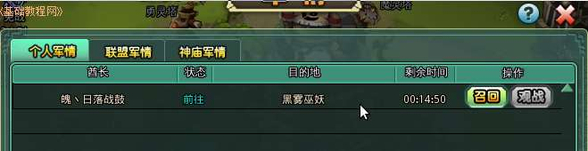

塔防游戏部落守卫战新手攻略
作者：TeliuTe 来源：基础教程网
八、出征和打野 返回目录 下一课出征可以攻打野怪和进攻其他玩家；
1、出征和打野
1）点击最下边任务栏上的“出征”按钮，打开出征面板；
2）在出来的面板中，上边是选择目标，中间是奖励，下边是兵力配置，依次选择然后点右下角的“出征”；

3）先点击目标，可以选择野怪、敌对势力等，默认选择的是左侧栏里的第一个野怪，再在右边选择一个战力相当的野怪；

4）点上边的敌对势力，可以攻打其他玩家，首先点击玩家头像或用户名找到玩家坐标，右上角地图在右上角输入坐标后，点“OK”即可找到玩家；

5）点击玩家的部落，在出来的对话框中，选择“宣战”，然后回到“出征”面板，在敌对目标中就可以看到对方；
6）点击“出征”后，在任务栏的“军情”按钮中可以查看出征状态；

7）出征后不能再练兵和试练洞穴等作战行动；
本节学习了出征和打野的基础知识，如果你成功地完成了练习，请继续学习下一课内容；
本教程由86团学校TeliuTe制作|著作权所有
基础教程网：http://teliute.org/
美丽的校园……
转载和引用本站内容，请保留作者和本站链接。